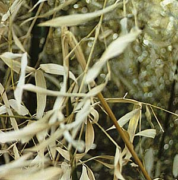

Saturday, March 27, 2004
Zenzac

The Fortuitous Juxtaposition Of Incipient Hypochondria And Petty Larceny In A Clinic Corridor

It was early. The clinic had just opened for business and nurse M. and I were in rooms with the first two patients of the day. We emerged in tandem to see a young man in a wool cap rushing down the hall, away from our offices, toward the waiting room. Our clinic is not a through traffic area. And he was not a patient.
"Who's that ?" M. asked. "Do you think he took anything ?"
I checked my backpack, plopped in its usual spot on the floor by my desk. No wallet.
It had been a somewhat, well, neurotic morning. Barely awake and undercaffeinated, I'd peered in the bathroom mirror and concluded that my right eyelid was drooping. A little. Maybe.
My medical brain whirred into action it's not seen since I was cramming for my board recert a year ago. Ptosis ? Horner's syndrome ! Third nerve palsy ! Aneurysm ! Pancoast tumor ! Brain tumor ! Stroke ! Carotid dissection ! Multiple sclerosis ! Giant cell arteritis ! Could the vertebral arteries be occluding ? And the pupil: too large or too small ? Was I sweating a wee tad less on one side of my face ? Omigod -- could this have anything to do with the tinnitus in my right ear ? Or that fugitive and subtle tingling on the sole of my right foot that I'd been noticing off and on ? Was that my tongue tingling now ? That eyelid was even feeling heavy ! And the headaches I'd awakened with three days running, maybe they weren't caffeine related after all -- it's the aneurysm ABOUT TO BLOW ! Did those MRAs I had after the accident last September include the Circle of Willis ??
Fueled by timor mortis, I came up with a comprehensive, consultant-level list of terrible afflictions that would probably do me before I even made it to work.
Then I did what I ask patients to do when they think they have a subtly droopy eyelid: I checked a photo to see whether it's always been droopy and maybe I just noticed it this morning.
I went for the obvious: my driver's license picture.
This entailed an unusual morning excursion of my wallet out of my backpack and onto my desktop. I extracted my license and scrutinized my (extraordinarilty hideous) DMV mugshot. Even through my OED magnifying glass, I could tell nothing about my eyelids, but I was able to ask, once again, the obvious question, "Who is that broad-faced dopey-looking gray haired peasant in the owlish glasses ?"
Against all odds, I arrived at work neurologically intact, and locked myself in the little staff bathroom to continue my self-examination: I stared and ogled and squinted and gaped and glared and finally decided it was all an inconsequential asymmetry, one eye just a little more deeply set in its socket. I shuddered a little, thinking of eye sockets, then put it all out of mind. Concluded that having had adult rickets and a C2 fracture in the space of half a year had made me a bit of a hypochondriac. Vowed to resist it.
Then wool cap man whizzed down the corridor and I noticed my wallet was missing.
Was it home on my desk next to the OED magnifying glass ?
Fast forward to the end of the day: it was not.
And my credit card company recorded an attempt to procure $283 from a bank one town over from the hospital, a half hour after Mr Wool Cap had fled the building.
A charming, spiky little nexus of events, eh ?
I suppose that if I'd not fished my wallet from the ugly depths of the backpack that morning and replaced it right on the easy-to-snatch top of things, maybe Mr Cap would have been delayed in his criminal act and I might have caught him. "Unhand that, miscreant !" I could have shouted, and surely nurse M. and I could have wrestled him to the ground and summoned our little hospital's crackerjack security team.
Heroines.
Or maybe he would have shot us.
Or, discovered, started to cry (he looked quite young.)
But the karmic algorithm evolved as it evolved. Me, inconvenienced. The thief not much richer, and most likely living a life heavy on affliction.
Maybe I'll ask the DMV to take another mugshot for my new license.
One that shows the eyelids this time. Just in case.
Sunday, March 21, 2004
Dwelling

Etymologically, "dwell" comes from to tarry, to linger. There is an implicit sense of transience. Stay awhile, then move on. This house, this body, this earth. As night comes on, fitful rain hits the window. The sound is sharp; it could be ice. I rejoice in the warmth and light of my dwelling, even as I experience its provisionality.
I am a stranger with thee, and a sojourner, as all my fathers were.
It's from another beautiful song. This time, not in my dear father, Raul Stanati's voice, but in Alfred Deller's, the late, magnificent countertenor. It's from an anthem by Orlando Gibbons, based on the 39th psalm, a psalm of lament and of supplication. The psalmist, whose life is like "a puff of wind" and who "walks about like a shadow," prays "turn your gaze from me, that I may be glad again/before I go my way and am no more." It is God's punishment he feels, God's "rebukes for sin." The "gaze" of God is piercing and afflictive: disheartening, debilitating, the ultimate panopticon.
Can we read it as a projected gaze ? A reification of our own afflictive self-consciousness, the big eye/I that is the ego ?
In the text of Gibbons' anthem, the gaze is displaced: "O spare me a little, that I may recover my strength/ before I go hence and be no more seen." The psalmist asks for generic mercy and mourns his own passing, his disappearance from the gaze of others.
Two other fragments of text come to mind. The first, from Waiting for Godot:
"They give birth astride a grave, the light gleams an instant, then it's night once more."
This existentially bleak image contains no dwelling except a glint of light and its implicit eye. Later the image recurs, elaborated:
"Astride of a grave, and a difficult birth. Down in the hole, lingeringly, the grave-diggger puts on the forceps. We have time to grow old. The air is full of our cries."
Well, that's a little better. Midair, on that blankest of pages, we compose our cries.
I walked the river path again yesterday, alert for signs of spring. My eye is tiring of tangled detritus, of thorn and fading leaf, of browns and grays punctuated by the shock of lingering red berries or of a branch that's greenish or maroon. Of everything, underfoot, becoming black slime.
A woman walking a dog stopped as I photgraphed a backlit bank of pale yellow, nearly translucent leaves last week. "Something interesting ?" she asked. "Everything's interesting," I replied, in a yellow ecstasy.

Today I'm not so sure. Winter weariness. It will pass.
At least the recent snowfall has covered the riverbank litter, the plastic springwater bottles flung aside by virtuous, self-hydrating joggers, the potato chip bags dropped by the more phlegmatic strollers, the tires, the shopping carts, the mattresses, sprung umbrellas, booze bottles, cigarette butts, condom wrappers -- and even, in a small iced-over cove, a rubber ball stamped: PROZAC.
Indeed.
Is there any sign of quickening ? Do the branches seem a bit more knobbed, the tight buds slightly fuller ?
There's some undeniable action:

And, even more spectacularly,

and even this

We should not ever doubt that all is flux and flow, and that we have awakened into its dazzling midst. We feel affliction, pleasure; we fill the air with our cries -- for mercy, of delight. We address it all as "God" -- that most capacious of words -- out of the depth of our most inarticulate longing: de profundis clamavi.
The third text is the famous ending of the Diamond Sutra.
So you should view all of the fleeting worlds:
A star at dawn, a bubble in the stream,
A flash of lightning in a summer cloud,
A flickering lamp, a phantom and a dream.
It contains the psalmist's "puff of wind" and "shadow," and the playwright's momentary "gleam" of light. It does not privilege the cries, the supplications, the theistic quid pro quos, the sense of absurdity: ontologically, they are simply fleeting worlds among a myriad fleeting worlds. Waystations, on a long railroad.
Tiny dwellings along the way.